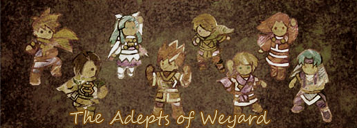

Welcome to The Adepts of Weyard, a Golden Sun fansite run by yours truly, Caz
Ever since May 2003, The Adepts of Weyard has been bringing you all sorts of content related to Nintendo's Golden Sun series - creative nonsense, useful and interesting information, wacky humour, mind numbing crack and generally all sorts of things. You will find a real variety of stuff in this website.
Last Updated: 3rd February 2023

 Isaac and Garet's Lookout Cabin
(Information)
Isaac and Garet's Lookout Cabin
(Information)
 Ivan's Library (Media)
Ivan's Library (Media)
 Mia's Seaside Getaway
(Couples)
Mia's Seaside Getaway
(Couples)
 Felix's Forest (Humour &
Assorted Things)
Felix's Forest (Humour &
Assorted Things)
 Sheba's Crystal Ball
(Future of Golden Sun)
Sheba's Crystal Ball
(Future of Golden Sun)
 Piers's Logbook (Trivia)
Piers's Logbook (Trivia)
 Alex's Archives
(Site-related Stuff)
Alex's Archives
(Site-related Stuff)

 Karst and Agatio's Torture Chamber
Karst and Agatio's Torture Chamber

 Matthew and Karis's Treehouse
(Dark Dawn stuff)
Matthew and Karis's Treehouse
(Dark Dawn stuff)
 Tyrell's Rec Room
(Humour)
Tyrell's Rec Room
(Humour)
Affiliates:


Golden SunTM is a registered trademark of
Nintendo/Camelot (c) 2001.
The Adepts of Weyard is in no way endorsed by any
of these companies,
nor is this site official in any way. No copyright
infringement is intended.